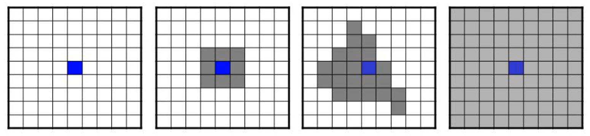
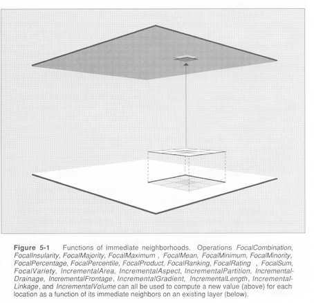
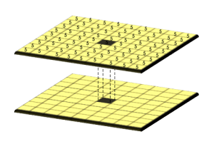
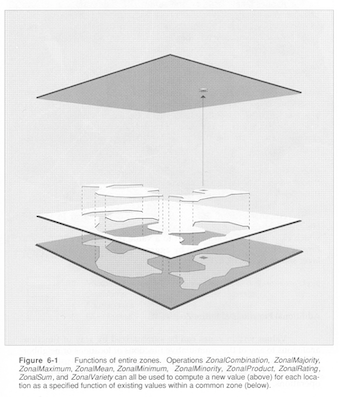

# Remplace les valeurs -9999 par NA
elev[elev[[1]]== -9999] <- NA
# Remplace les valeurs < 1500 par NA
elev[elev < 1500] <- NA
# Remplace les valeurs NA par 0
elev[is.na(elev )] <- 013 Algèbre spatial
L’algèbre spatial se classifie en quatre groupes d’opération (Tomlin, 1990) :
- Local : opération par cellule, sur une ou plusieurs couches;
- Focal : opération de voisinage (cellules environnantes);
- Zonal : pour résumer les valeurs matricielles pour certaines zones, généralement irrégulières;
- Global : pour résumer les valeurs matricielles d’une ou plusieurs matrices.

13.1 Opérations locales

Les opérations locales concernent les calculs réalisés indépendamment sur une cellule, à partir d’une ou plusieurs couches (matrices).
13.1.1 Remplacement de valeur
13.1.2 Opération sur chaque cellule
# Ajout de 1000 à la valeur de chaque cellule
elev_1000 <- elev + 1000
# Suppression de l'altitude médiane à la valeur de chaque cellule
elev_med <- elev - global(x = elev, fun = median, na.rm = TRUE)[[1]]

13.1.3 Reclassification
La reclassification des valeurs d’un raster peut aussi bien être utilisée pour discrétiser des données quantitatives que pour catégoriser des modalités qualitatives.
Cela permet par exemple de répartir les 44 postes de la nomenclature CLC selon les 5 grands types d’occupation du territoire : territoires artificialisés, agricoles, forêts et milieux semi-naturels, zones humides et surfaces en eau. Pour cela, il est d’abord nécessaire de construire une table de correspondance avec la fonction matrix().
reclassif <- matrix(c(100, 199, 1,
200, 299, 2,
300, 399, 3,
400, 499, 4,
500, 599, 5),
ncol = 3,
byrow = TRUE)
reclassif#> [,1] [,2] [,3]
#> [1,] 100 199 1
#> [2,] 200 299 2
#> [3,] 300 399 3
#> [4,] 400 499 4
#> [5,] 500 599 5Les valeurs comprises entre 100 et 199 seront remplacées par la valeur 1. Les valeurs comprises entre 200 et 299 seront remplacées par la valeur 2. Les valeurs comprises entre 300 et 399 seront remplacées par la valeur 3. …
La fonction classify() permet de réaliser la reclassification.
clc_5 <- classify(clc, rcl = reclassif)
plot(clc_5, type = "classes")
Affichage avec les intitulés et couleurs officiels des différentes catégories.
plot(clc_5,
type = "classes",
levels = c("Territoires artificialisés",
"Territoires agricoles",
"Forêts et milieux semi-naturels",
"Surfaces en eau"),
col = c("#E6004D", "#FFFFA8", "#80FF00", "#00CCF2"),
plg = list(cex = 0.7))
13.1.4 Opération sur plusieurs couches (ex: NDVI)
Il est possible de calculer une valeur de cellule à partir de différentes valeurs stockées dans plusieurs couches d’un objet SpatRaster.
L’exemple le plus courant est sans doute le calcul de l’indice de végétation normalisé (NDVI). Pour chaque cellule, on calcule une valeur à partir de deux couches de données matricielles d’une image satellite multispectrale.
# Import d'une image satellite multispectrale
Sentinel2a <- rast("data/Sentinel2A.tif")
Sentinel2a#> class : SpatRaster
#> dimensions : 1242, 1061, 2 (nrow, ncol, nlyr)
#> resolution : 9.997187, 9.997187 (x, y)
#> extent : 570465.7, 581072.7, 6368052, 6380468 (xmin, xmax, ymin, ymax)
#> coord. ref. : RGF93 v1 / Lambert-93 (EPSG:2154)
#> source : Sentinel2A.tif
#> names : T31TCK_20211012T105011_B04_10m, T31TCK_20211012T105011_B08_10m
#> min values : 1, 4
#> max values : 16112, 11273Cette image satellite multispectrale (résolution de 10m) datée du 12/10/2021, a été produite par le satellite Sentinel-2 et a été récupéré sur la plateforme Copernicus Open Access Hub. Une extraction des bandes spectrales Rouge et proche infrarouge, centrée sur le département du Lot a ensuite été réalisée.
plot(Sentinel2a)
Pour alléger le code, on assigne les couches matricielles dans deux objets SpatRaster différents.
# Bande spectrale rouge
B04_Red <- Sentinel2a[[1]]
# Bande spectrale proche infrarouge
B08_NIR <-Sentinel2a[[2]]À partir de ces deux rasters, nous pouvons calculer l’indice de végétation normalisé :
\[{NDVI}=\frac{\mathrm{NIR} - \mathrm{Red}} {\mathrm{NIR} + \mathrm{Red}}\]
raster_NDVI <- (B08_NIR - B04_Red ) / (B08_NIR + B04_Red )
plot(raster_NDVI)
Plus les valeurs sont importantes (proche de 1), plus la végétation est dense.
13.2 Opérations focales

L’analyse focale considère une cellule plus ses voisins directs de manière contiguë et symétrique (opérations de voisinage). Le plus souvent, la valeur de la cellule de sortie est le résultat d’un bloc de cellules d’entrée 3 x 3 (nombre impair).
La première étape consiste à construire une matrice qui détermine le bloc de cellules qui sera pris en compte autour de chaque cellule.
# Matrice 9 x 9, où chaque cellule présente la même pondération (1)
mon_focal <- matrix(1, nrow = 9, ncol = 9)
mon_focal#> [,1] [,2] [,3] [,4] [,5] [,6] [,7] [,8] [,9]
#> [1,] 1 1 1 1 1 1 1 1 1
#> [2,] 1 1 1 1 1 1 1 1 1
#> [3,] 1 1 1 1 1 1 1 1 1
#> [4,] 1 1 1 1 1 1 1 1 1
#> [5,] 1 1 1 1 1 1 1 1 1
#> [6,] 1 1 1 1 1 1 1 1 1
#> [7,] 1 1 1 1 1 1 1 1 1
#> [8,] 1 1 1 1 1 1 1 1 1
#> [9,] 1 1 1 1 1 1 1 1 1La fonction focal() permet ensuite de réaliser l’analyse souhaitée. Par exemple : le calcul de la moyenne des valeurs dans une fenêtre spatiale determinée, pour chaque cellule du raster.
elev_focal_mean <- focal(elev, w = mon_focal, fun = mean)plot(elev, main = "raster de départ")
plot(elev_focal_mean, main="résultat : focal 9 x 9, pondération uniforme")

13.2.1 Opération focales pour rasters d’élévation
La fonction terrain() permet de réaliser des analyses focales spécifiques au rasters d’élévation. Six opérations sont disponibles :
- slope = calcul de la pente ou degré d’inclinaison de la surface;
- aspect = calcul de l’orientation de la pente;
- roughness = calcul de la variabilité ou l’irrégularité de l’élévation;
- TPI = calcul de l’indice des positions topographiques;
- TRI = calcul de l’indice de la variabilité de l’élévation;
- flowdir = calcul du sens d’écoulement de l’eau.
Exemples avec le calcul des pentes (slope), c’est à dire leur inclinaison en degrés.
slope <- terrain(elev, "slope",
neighbors = 8, # 8 (ou 4) cellules autour pris en compte
unit = "degrees") # Unité en sortie
plot(slope)
13.3 Opérations globales

Les opérations globales permettent de résumer les valeurs matricielles d’une ou plusieurs matrices.
# Valeur moyenne
global(elev, fun = "mean", na.rm = TRUE)#> mean
#> altitude 251.3601# Écart-type
global(elev, fun = "sd", na.rm = TRUE)#> sd
#> altitude 54.58627# Fréquence
freq(clc_5)#> layer value count
#> 1 1 1 3775
#> 2 1 2 38118
#> 3 1 3 56331
#> 4 1 5 928Représentations statistiques qui résument les informations matricielles.
# Histogramme
hist(elev)
# Densité
density(elev)
# boxplot
boxplot(elev)#> Warning: [boxplot] taking a sample of 1e+05 cells
13.4 Opérations zonales

Les opérations zonales permettent de résumer les valeurs matricielles de certaines zones (groupe de cellules contiguë dans l’espace ou en valeur).
13.4.1 Opération zonale à partir d’une couche vectorielle
La fonction extract() permet d’extraire et de manipuler les valeurs des cellules qui intersectent des données vectorielles.
Exemple à partir des limites communales :
commune <- vect("data/lot.gpkg", layer = "communes")
# Moyenne d'élévation pour chaque polygone (commune)
elev_by_com <- extract(elev, commune, fun = mean, na.rm = FALSE)
head(elev_by_com, n = 3)#> ID altitude
#> 1 1 NaN
#> 2 2 NaN
#> 3 3 NaN# Suppression des valeurs NaN
elev_by_com <- elev_by_com[!is.nan(elev_by_com$altitude),]
# Remplacement des identifiants uniques par le nom des communes
elev_by_com$ID <- commune[elev_by_com$ID]$NOM_COM
head(elev_by_com, n = 6)#> ID altitude
#> 7 Arcambal 213.0009
#> 10 Aujols 216.7961
#> 23 Belmont-Sainte-Foi 302.4436
#> 29 Boissières 252.0305
#> 39 Cahors 205.1988
#> 41 Caillac 145.986813.4.2 Opération zonale à partir d’un raster
Les opérations zonales peuvent être réalisées par zone délimitée par les valeurs catégorielles d’un second raster avec la fonction zonal(). Pour cela, les deux rasters doivent avoir exactement le même étendue et la même résolution.
# Élévation moyenne pour chaque zone de clc
zonal(elev, clc_5, "mean", na.rm = TRUE)#> clc altitude
#> 1 1 209.7177
#> 2 2 259.3624
#> 3 3 249.4070
#> 4 5 115.8435